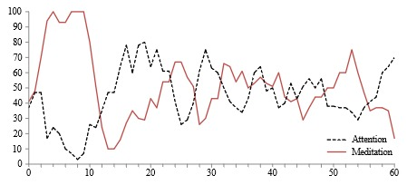

This workshop was part of a research that investigates by tutors(Andrea Macruz,Ernesto Bueno, Gustavo Sol,Jaime Vega ,Ricardo Palmieri) the role of technology and neuroscience in
assisting in the design process and creating meaningful connections between people and nature.
the workshop is guided by the question: can indicators such as emotional valences and levels of
attention and meditation in brain waves help identify geometric pat-terns in the perception of
projects with characteristics of well-being
▾

Graph plot of average Attention and Meditation levels from
EEG measures of project 1(mine)
▾